- コンピュータ本体
- IBM IntelliStation M Pro （CPU: Pentium4 2GHz, メモリー 512MB)
- オペレーティングシステム
- Windows 2000 Professional あるいは Linux
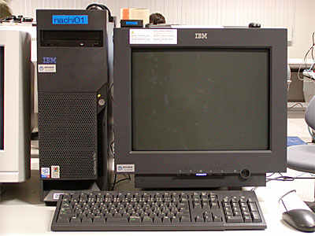 |
| 演習用パソコン |
|---|
演習室にあるコンピュータの本体は、実際には３つのタイプが存在します。
- nachi01～nachi30（青ラベル）
- グラフィック機能を強化したもの。
- nachi31～nachi75（橙ラベル）
- 通常の機能を持つもの。
- nachi76（本体が白色）
- スキャナ、MO、メモリカードなどの入出力機器を接続したもの。 通常は使用しないでください。
それぞれのパソコンはこの教室内のローカルエリアネットワーク (LAN) に接続され、 和歌山大学全体の LAN を通じて大学の外のネットワーク、 いわゆるインターネットに（常時）接続されています。 したがって、皆さんはこのコンピュータを使っていつでも自由に電子メールを送ったり Web サーフィンを行うことができます。もちろん、ワープロを使ってレポートを書いたり、 自分の Web ページや CG を作ったりすることもできます。
皆さんがこのコンピュータ上で作成したファイル（データやプログラム等）は、 LAN を介して別の場所にあるサーバコンピュータに保存されます。 したがって、皆さんこの教室のどのコンピュータを使っても、 以前に保存したデータやプログラムを取り出すことができます。
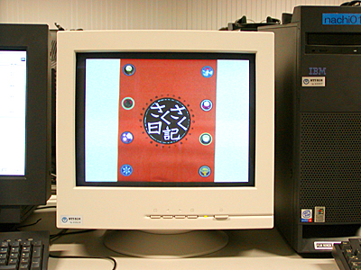 |
| 教材提示装置 |
|---|
コンピュータとコンピュータの間にある白いディスプレイは、教材提示装置のものです。 ここには教員用のコンピュータの画面やビデオ、スライド等を表示します。 教員の指示に従って電源を入れてください。
皆さんは、ここ（システム工学部A棟601号室）を含めて、以下の場所にあるコンピュータを使用できます。
- システム工学部A棟803号室
- デザイン情報学科の学生が使用できます。主に実験や実習で使用します。
- システム工学部A棟601号室
- 情報通信システム学科とデザイン情報学科の学生が使用できます。主に授業で使用します。
- システム工学部A棟301号室
- システム工学部の学生が使用できます。主に授業で使用します。
- システム情報学センター
- 全学の学生が使用できます。
システム情報学センターには、 ３つの演習室に加えて２つのオープンスペースラボラトリー (OSL)があり、 自習等に使用することができます。
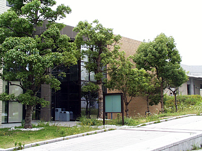 |
| システム情報学センター |
|---|
大学内のコンピュータを使用する場合は、いくつかの注意点があります。 特に、以下の行為は厳禁です。 利用マナーが悪い場合は、アカウント（利用権）を停止する場合があります。
- 喫煙や飲食
- 誤ってキーボードやコンピュータ本体に飲み物をかけてしまったり、 発生したゴキブリがコンピュータ本体に侵入して故障を引き起こす場合があります。 喫煙はもってのほかです。
- 長時間の占有
- 多くの人が共有してるコンピュータですから、 長時間の占有は他の人の学習機会を奪うことになります。 CGのレンダリングなどで長時間連続使用する必要があるときは、 教員に相談してください。
- 利用権の又貸し
- コンピュータ利用承認書に書かれているパスワードは他人には教えないでください。 特に、自分のユーザ名を他人に使用させることは絶対行わないでください。
電源を入れると、最初にオペレーティングシステムの選択画面が現れます。
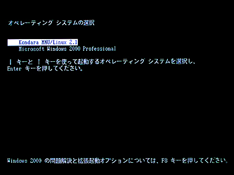
このまま何もせずにいれば、10 秒後に Kondara MNU/Linux 2.1 が起動します。 すぐ起動したければ Enter キーをタイプしてください。
- オペレーティングシステム
- コンピュータ自体を管理するソフトウェアです。
- Linux
- 「リナックス」あるいは「リーナックス」と読みます。「ライナックス」と読むと嫌われることがあるようです。Unix 互換のオペレーティングシステムのひとつで、一般の商用ソフトウェアとは異なり自由に配布することができます。Linux に関する情報は、日本の Linux 情報などから入手できます。 Linux が何であるかを知るには、 ここの初心者必見を読んでみて下さい。
- Unix
- 「ユニックス」と読みます。もともとは AT&T ベル研究所で開発された、歴史のあるオペレーティングシステムです。現在でもサーバ用 OS として広く使われているほか、Windows をはじめ、現在のオペレーティングシステムにも大きな影響を与えています。
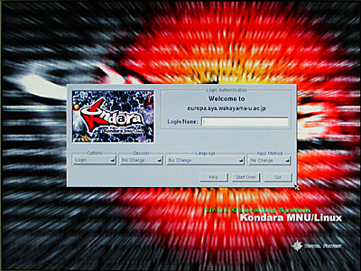
コンピュータの起動に成功すると、上のような画面が現れます。もし Windows 2000 Professional を起動してしまったときは、 Ctrl キーと Alt キーを同時に押しながら Delete キーをタイプ (Ctrl-Alt-Del) し、 Windows 2000 のログインパネルから再起動を選んでください。
オペレーティングシステムというソフトウェアの役割は、大雑把に言って次の二つがあります。
コンピュータは CPU (Central Processing Unit: 中央演算処理装置) をはじめ、メモリ、ハードディスク、ディスプレイ、キーボード、マウスなど、数多くの部品で構成されています。このような部品や、その部品の集まりであるコンピュータの本体のことを、私たちはコンピュータのハードウェアと呼んでいます。私たちがコンピュータを使うときは、このハードウェアの機能をうまく組み合わせることによって、目的の仕事を達成します。
一方、このハードウェアの機能を引き出すためには、その使い方に関する知識が必要になります。例えばワープロに１文字打ち込むというなんてことはない作業でも、タイプされたキーの文字が何であるかを調べ、それを画面に表示し、記憶している文書の中に挿入する、という個々の細かな知識（手順）をコンピュータが知っているからこそ実現できるのです。このような知識のことを、私たちはコンピュータのソフトウェアと呼んでいます。
そして、このソフトウェアのうち、利用者が実際に仕事をするために使うワープロなどのソフトウェアのことを、アプリケーションソフトウェアと呼びます。一方、コンピュータのハードウェア自体を制御したり、アプリケーションソフトウェアがハードウェアの機能を使うときに、その仲立ちをするための知識として働くソフトウェアのことを、システムソフトウェアあるいはオペレーティングシステム(OS)と言います。
コンピュータの個々の部品や、それらが果たす機能（CPUなら計算する機能、メモリやディスクなら記憶する機能）は有限ですから(無限に速く計算することもできないし、記憶できる情報の量にも限界がある)、これらは限りある資源のようなものです。したがって、このようなものをコンピュータの資源（リソース）と呼んだりします。
オペレーティングシステムは、この資源を効率よく使えるように管理するソフトウェアです。そしてオペレーティングシステムは、アプリケーションソフトウェアに対して、自分が管理しているハードウェアの機能を使用するための抽象化されたインタフェースを提供します。
キーボードのキーにはいくつかの種類があります。
- 文字キー
- アルファベットやアルファベットの上にある数字／記号のキーは、 そのキーをタイプすればその文字が現れます。
- スペースバー
- アルファベットのキーの下にある横に長いキーで、 空白文字が現れます。単語の区切りなどに使います。
- Backspace
- バックスペースキーと言います。直前にタイプした文字を１文字消します。
- Enter
- 改行キーとも言います。 キーボードによっては Return と書かれているものもあります。 改行するときに使いますが、 コンピュータにおいて「改行する」とは、 しばしばそれまでタイプした文字をコンピュータ側に送る（入力する）ことを意味します。
- Shift
- シフトキーと言います。 アルファベットの大文字をタイプするには、 このキーを押しながらアルファベットのキーをタイプしてください。 このキーを押しながら数字キーをタイプすると、 そのキーの上に書かれている記号が出力されます。
- Ctrl
- コントロールキーと言います。 このキーを押しながら文字キーをタイプすると、 制御文字（コントロールキャラクタ）がコンピュータに送られます。Ctrlキーを押しながら A のキーをタイプすることを、ここでは "Ctrl-A" と表記します。
- Alt
- オルタナティブキーと言います。 このキーも Ctrl キーと同様、他のキーと組み合わせて使用します。Alt キーを押しながら A のキーをタイプすることを、ここでは "Alt-A" と表記します。
- Caps Lock
- Shift を押しながらこのキーを一度押すと、 キーボードの右側にある 'A' と書かれたところのランプが点灯し、 シフトキーを押さない状態で大文字のアルファベットがタイプできます。 もう一度押すと元に戻ります。
- Num Lock
- このキーを一度押すと、 キーボードの右側にある '1' と書かれたところのランプが点灯し、 テンキー（キーボードの右側にある数字キー）で数字がタイプできるようになります。 もう一度押すと元に戻ります。

キーボードにはこのほかに矢印キーや種々のファンクションキーがありますが、 それらに付いては適宜解説します。
Linux や UNIX 系オペレーティングシステムの場合、 利用に先立って、 これからそのコンピュータを利用しようとする利用者の登録名（ログイン名）と、 その暗証番号（パスワード）をコンピュータに教えてやる必要があります。 この作業をログインといいます。
みなさんのシステム情報学センターの利用承認書に書かれているログイン名（ユーザ名）とパスワードをここにタイプします。 このログイン名とパスワードは、 「１．３ コンピュータ演習室について」に挙げたいずれの演習室でも共通に使用できます。
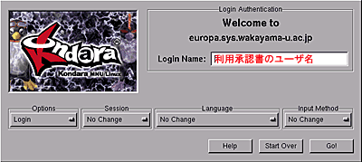
"Login Name:" の欄にログイン名を入力します。 承認書に書かれているログイン名を、 キーボードをタイプして入力してください。 打ち間違えたときは、[Backspace]キーをタイプすれば１文字消すことができます。 全部打ち終えたら [Enter] キーか [Tab] キーをタイプしてください。 すると打ち込んだユーザ名が消えて、次にパスワードの入力を求めてきます。
※今は Options、Session、Language、および Input Method は変更しないでください（Options は Login、他は No Change のまま）。
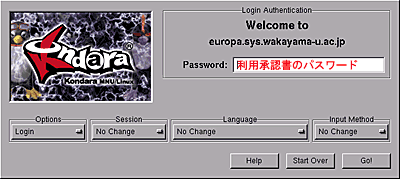
ここには承認書に書かれているパスワードをキーボードをタイプして 入力してください。他人に見られないようにするために、 タイプしたパスワードは画面には表示されません。 大文字をタイプするには Shift キーを押しながらその文字をタイプしてください。
| ログイン名やパスワードを打ち間違えたとき |
|---|
| ログイン名やパスワードを間違えると、 上の画面がブルブルと震えた後、再度ログイン名の入力画面が現れます。 この場合はもう一度ログイン名から入れなおしてください。 |
ログインに成功すると次のような画面が現れます。
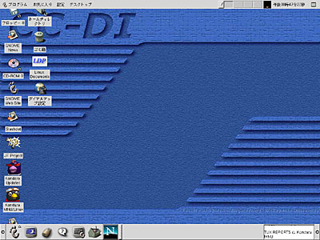
マウスを机の上で滑らすように動かすと、 それにつれて画面上の矢印（マウスカーソル、 これは場合によって I や時計などいろいろ形を変えます）が動きます。 このマウスを動かしてマウスカーソルを“目的地”の上に移動し、 そこでボタンを押して、コンピュータの操作をします。
このボタンの押し方には、いくつかのパターンがあります。
- クリック
- ボタンを“カチッ”と１回押してすぐに離します。
- ダブルクリック
- ボタンを“カチカチッ”と２回続けて（0.5 秒以内？）クリックします。
- ドラッグ
- マウスのボタンを押しながら、マウスを動かします。 たいてい、マウスカーソルの位置にある“何か”が、 それに引きずられて移動します。
たぶん、画面の左下に、以下のような絵記号の列が描かれていると思います。 このようにシンボル化されたオブジェクト（対象）を一般にアイコンと言います （画面の下部のアイコンが並んでいる場所は、ここではパネルと呼んでいます）。
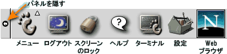
 では、試しにこの中のターミナルのアイコンをマウスの左ボタンでクリックしてみてください。
すると、このアイコンが「開いて」下のような“ウィンドウ”が現れると思います。
以降、特に断らない限り、「クリックする」と指示された時には「マウスの左ボタン」を使ってください。
では、試しにこの中のターミナルのアイコンをマウスの左ボタンでクリックしてみてください。
すると、このアイコンが「開いて」下のような“ウィンドウ”が現れると思います。
以降、特に断らない限り、「クリックする」と指示された時には「マウスの左ボタン」を使ってください。
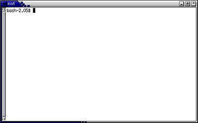
最小化ボタンをクリックすると、 このウィンドウは元のアイコンに戻ります。 最大化ボタンをクリックすると、 このウィンドウは拡大可能な最大サイズまで大きくなります。 もう一度クリックすると元に戻ります。
キーボードはマウスと並んで、 コンピュータを操作するときにもっとも良く使われる周辺装置 （ペリフェラル）です。 これがうまく使えないと、 コンピュータそのものが嫌いになってしまうので、 キーボードの練習にはちょっと時間を割きたいと思います。
マウスを開いたコンソールのウィンドウに移動し、 そこでキーボードから typing とタイプし、 その後 Enter キーを押してください。
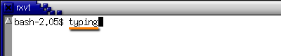
すると次のような表示が現れますから、 表示にしたがって練習を進めてください。
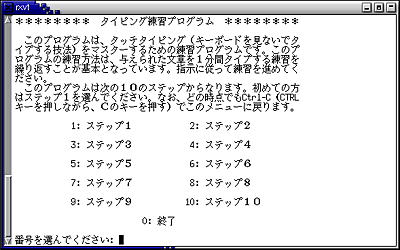
毎回１ステップずつ、１０～１５分くらい練習します。 なお、途中「５回繰り返せ」「３回繰り返せ」という指示があると思いますが、 時間がないので１回練習したらそのまま次に進んでください。 「次に進みますか」という問い合わせは次のステップに移行する時に出るので、 とりあえずそこまで進んでください。
最後にタイプ能力のテストを行いますから、 うまくできない人は空き時間を使って練習しておいてください。
コンピュータの使用が終わったら、 コンピュータにログインする前の状況に戻す必要があります。 そうしないと、 あとから来た人があなたのデータを操作できることになります。
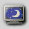
画面の下部にあるパネルの中から、ログアウトのアイコンをクリックしてください。 次に、「本当にログアウトしますか？」というウィンドウが現れますので、アクションの中から「ログアウト」を選択し（最初から選択されていると思います）、「はい」をクリックするか、Enter キーをタイプしてください。これでログアウト完了です。なお、電源を切る場合は、ここでアクションの中から「停止」を選択して「はい」をクリックしてください。ログアウト後に電源を切る場合は、電源スイッチを押してください。
あとはディスプレイと、もし点いていれば教材提示装置のディスプレイの電源を切ってから退室してください。